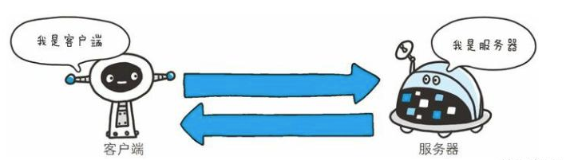
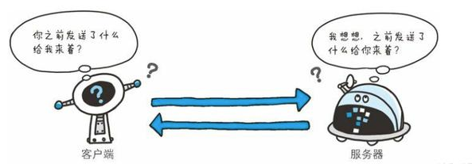
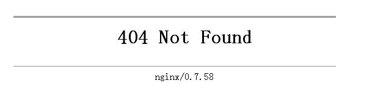
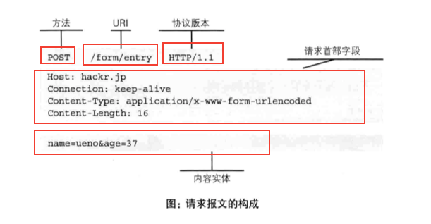
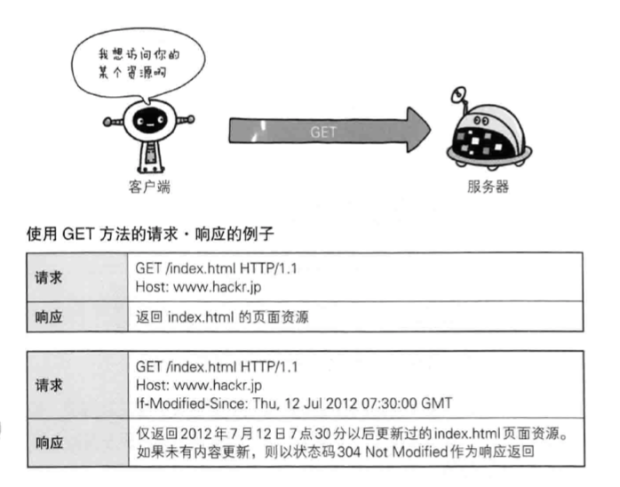
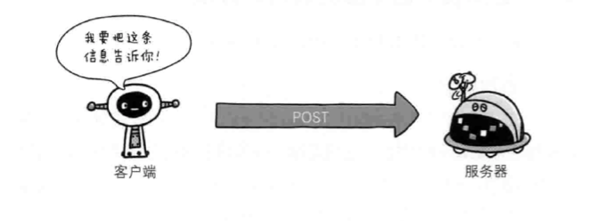
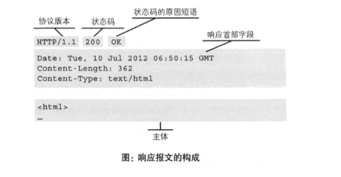

情景：
发生了什么：
简单来说：
HTTP协议，全称超文本传输协议，HyperText Transfer Protocol。
HyperText，超文本，可超链接文档，该文档可以指向其他位置——当前文档中、局域网中的其他文档、全网的任何位置的文档，这些文档组成了一个杂乱的信息网。
HTTP协议，是一套关于HyperText传输规定，例如包括了客户端和服务端的数据传输格式的规定等等，用于服务器传输超文本到本地计算机（浏览器）。
HTML，HyperText Markup Language，所以HTTP协议最初建立是为传HTML的。
在两台计算机间使用HTTP协议通信时，一条线路上，必有一端是客户端，另一端是服务器端，且在一次通信中角色确定。

HTTP协议采用请求-响应模型，请求永远由客户端发起，响应永远由服务器端回送：
请求于客户端发出，服务器端接收；服务器端只有在收到请求后才会有所动作。即，HTTP协议中，通信永远是客户端发起的，服务器端不会自己给客户端发生响应。
区别于WS协议(WebSocket)——WS同样基于TCP，是一种新的网络协议，和HTTP最大的区别在于，允许服务器端主动发送信息给客户端。
即连接不具有持久性，每次连接处理一个请求，服务器端返回资源，客户端接收到资源后，连接断开。
对比WS，WS的通信管道会一直存在，相当于心脏一直在跳动。
HTTP协议本身规定，通信双方均不保存此前的通信状态，是一种即无状态(stateless) 协议。

但我们会发现，有时候登录过一个网址，下次打开该网站主页，发现会直接跳到登录后的界面，这不是保存了之前登录通信的状态吗？
的确，登录状态被保存，但这不是HTTP协议做的，是Cookie技术做的，Cookie+HTTP，可以保存并管理“状态”。
一次HTTP通信，被称为一次事务，由四个步骤构成：
状态码，status code。

最常见：我们打开一个网页，显示“404 Not Found”，即404错误；这里404就是状态码，含义是：请求的资源（网页）不存在。
状态码是Response的一部分，是服务器告诉客户端此次请求的运行状态的信息。
服务器返回404状态码给客户端，也就是告诉客户端，你想拿的资源，我这里没有。
其实最常用的是200，表示请求成功。
其他常见：

由客户端发出的关于请求的信息，称为请求报文。
请求报文由三个部分构成：
有时候又把前两部分合称为请求的头部信息。
包括：
类似于字典，许多键值对构成，常见的有：
Host：指定请求资源的Internet主机和端口号；User-Agent：请求发出的用户信息，包括使用的浏览器的基本信息，反爬虫第一道防线；Accept：指定客户端接受哪些类型的信息，如Accept: text/html表示客户端希望拿到html文本，Accept: image/gif表示客户端希望拿到图像格式资源；Accept-Language：指定客户端接受哪种语言，不设置的话，服务器默认任何语言都可以；Accept-Encoding：指定客户端接受哪种内容编码，爬虫设置不当可能返回乱码。使用GET方法请求，没有请求正文；
使用POST等方法，通常需要客户端向服务器端传递数据，这些数据就储存在请求正文中。
最常用的两种：GET与POST
“俺要啥啥啥，快给我”
GET方法用于请求访问已被URI识别的资源：

注意：
http://wenshu.court.gov.cn/content/content?DocID=5e74db08-3b47-46d2-8f72-0522db986fba&KeyWord=，问号表示后面的内容是请求数据，请求数据是键值对的形式key=value，每个键值对用&隔开；“我告诉你那啥，xxx”
POST主要目的不是获取响应的内容，而是为了提交信息：

一般登录请求，都是使用POST方法，因为谁都不希望自己的账号密码以明文的形式出现在地址栏里面。

由服务器端回送的对于请求的响应，称为响应报文。
响应报文由三个部分构成：
有时候又把前两部分合称为响应的头部信息。
类似于字典，许多键值对构成，常见的有：
Content-Type：指明发送给客户端的实体正文的媒体类型，例如text/html; charset=utf-8表示响应实体是HTML文档，编码方式是UTF-8；Content-Length：实体正文的长度；具体的响应内容。
反爬另一道防线。
Cookie技术：通过在Request和Response中写入cookie信息来控制客户端的状态。
Cookie最开始由服务器端喂客户端：Cookie会根据服务器端响应报文中响应头部信息中的Set-Cookie字段，通知客户端保存这一段cookie。
以后每次客户端见服务器都带着：当下次客户端再与该服务器建立连接发送请求时，客户端会自动在请求报文的请求头信息中加入cookie值，即cookie字段；服务器拿到cookie字段后会去解析它，识别出是哪一个客户端发来的请求，然后对比其上的记录，得到此前该客户端的状态信息——比如小本本上记着该客户端此前不久登陆过了，就返回登录后界面的html。
By DraymondG